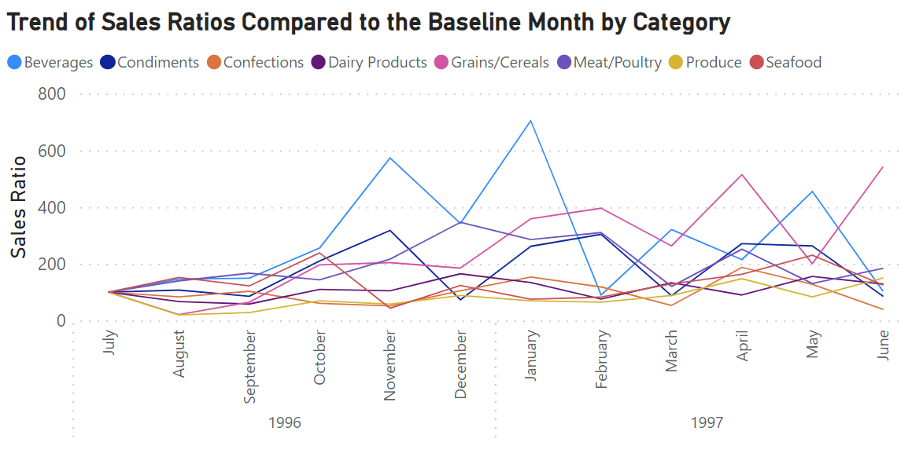
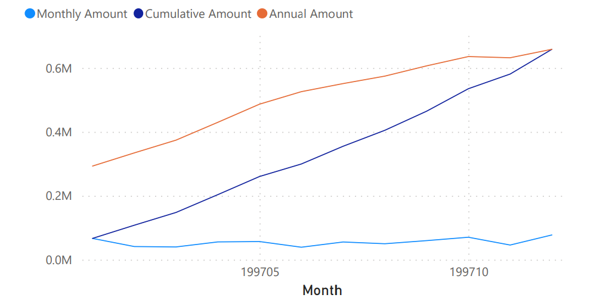
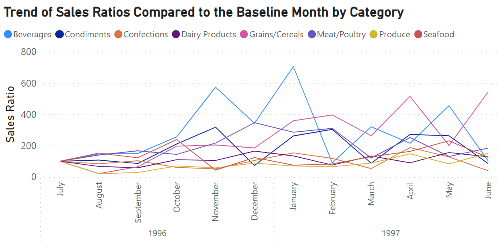
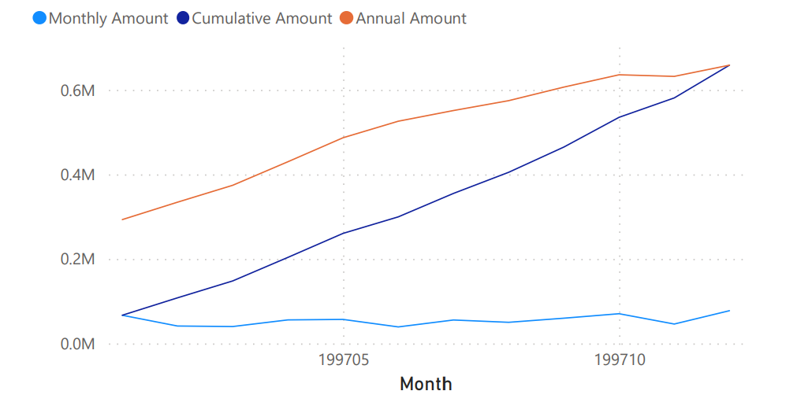

Sales and Revenue Analysis
By Dongsuk Jeong | July 2023
Purpose
This project aims to analyze the north wind sales dataset and gain some meaningful insights from it by using postgreSQL and Power BI. Check out my repository for more SQL queries and the pdf version of Power BI visualization
Methodology
Data Collection
This project will use the north wind sales dataset provided by Microsoft
PostgreSQL & Power BI
• Monthly order counts and total sales amount
• Monthly saless by product category
• Monthly cumulative sales and same-quarter monthly cumulative sales
• 5 days moving average total sales amount
• Sale popularity by categories and product ranking within categories
 • Comparison of sales between the current month and the past year month
• Sales trends by category criteria compared to sales in July, 1996

• Z chart in sales analysis

• Comparison of sales between the current month and the past year month
• Sales trends by category criteria compared to sales in July, 1996

• Z chart in sales analysis

Conclusion
• The monthly order increase gradually and peak at the March and April in 1998, then dropped significantly in May • Among the categories, beverages and dairy tend to sale more than other categories. Considering the fact that total sales amount reachs in March and April in 1998, diary products tend to increase the total amounts of sales overall • From 5 days moving average, overall total sales amounts tend to increase over times, but has some slow period between February and March in 1998 • Cote de blaye within beverages and raclette courdavault within diary categories sells the most. In other hands, grain/cereal category sold the least • The growth rate between current monthes and past year monthes increase from November 1997 to April 1998, then drop in May 1998 • Beverage shows the most increase in sales trends, but also drops the most as well after reaching the peak • From Z chart in sales analysis, the shape of Z tend to increase from left to right, which indicates the overall sales in both short term and long term increase gradually
Back to main page